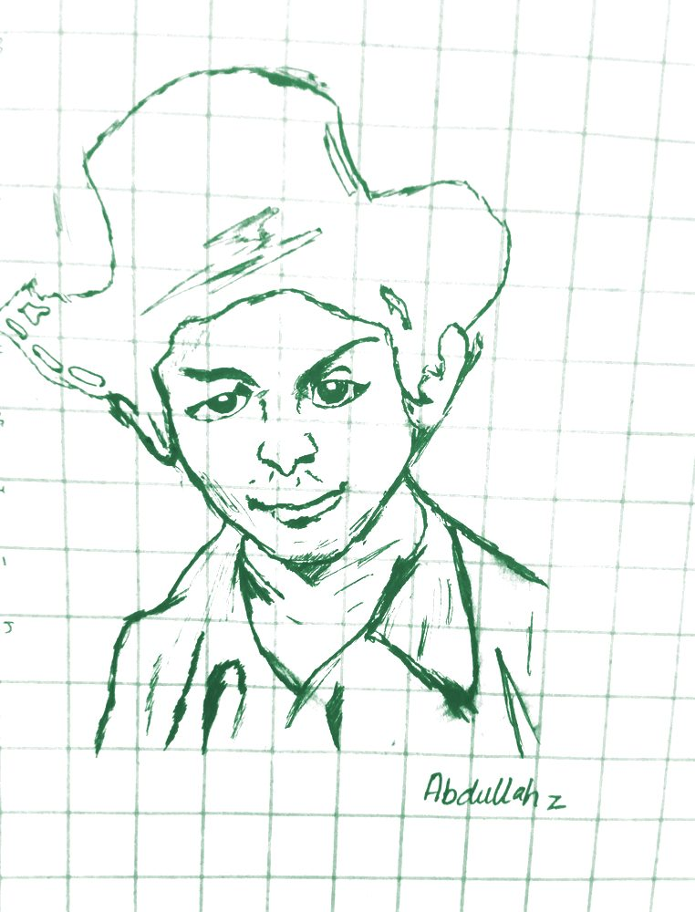
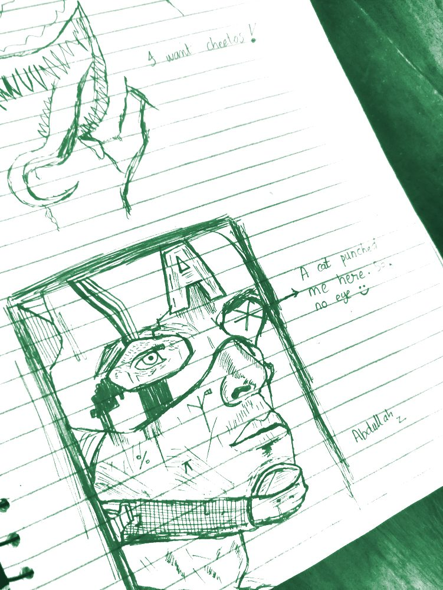

The Human
My name is Abdullah Nawaz. I am nineteen years old and studying for a Bachelor's in Computer Science at the Information Technology University in Lahore.
My days go into two things: writing code and drawing. I make things because the making itself is worth doing, and I try to follow my own sense of what matters rather than whatever happens to be in fashion.
Contact: abdullahforecasts@gmail.com+92 324 1200502

The Code
I mostly build games, tools, and systems in C++ and Python. I like problems where I have to understand what is happening underneath, so much of my work sits close to the machine: file systems, distributed inference, and engines built from the ground up.
It might not be out of this world, but I try, I improve, and I learn. I see algorithms in everything around me: I observe, I appreciate, and I repeat.
“Dizzy night. Fizzy sight.”
The Art
I draw with pencil, ballpoint pen, and paint, mostly in the margins of notebooks. Some pieces are careful portraits and some are quick lines caught between other things. The gallery collects the ones I kept.

Teaching
Teaching Assistant
- Programming Fundamentals
- Object Oriented Programming
- Data Structures and Algorithms